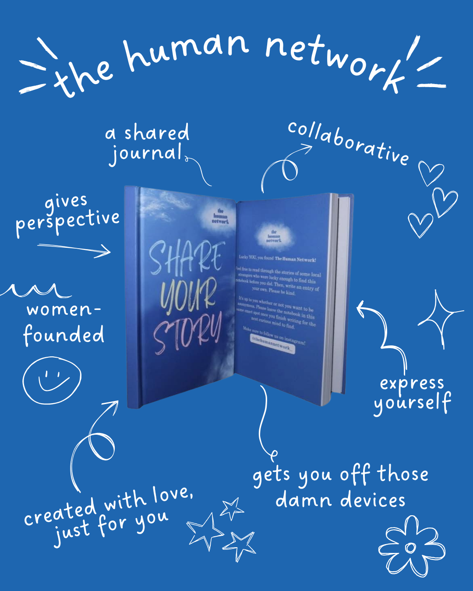
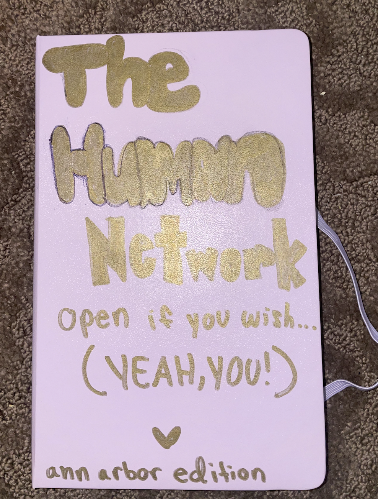
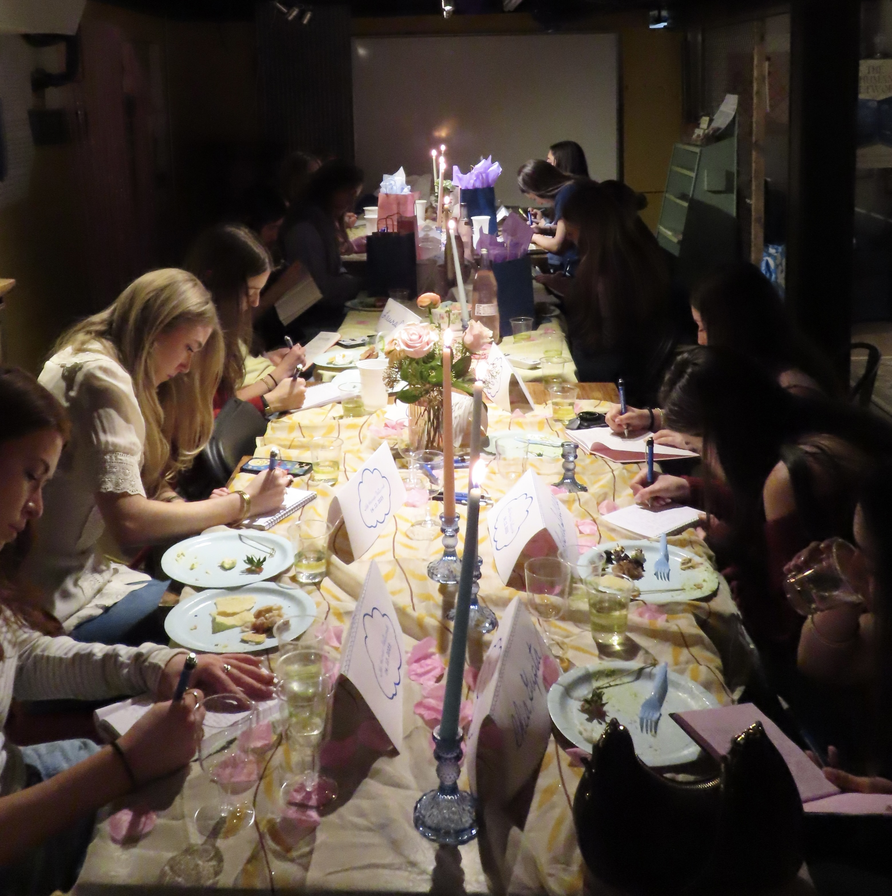
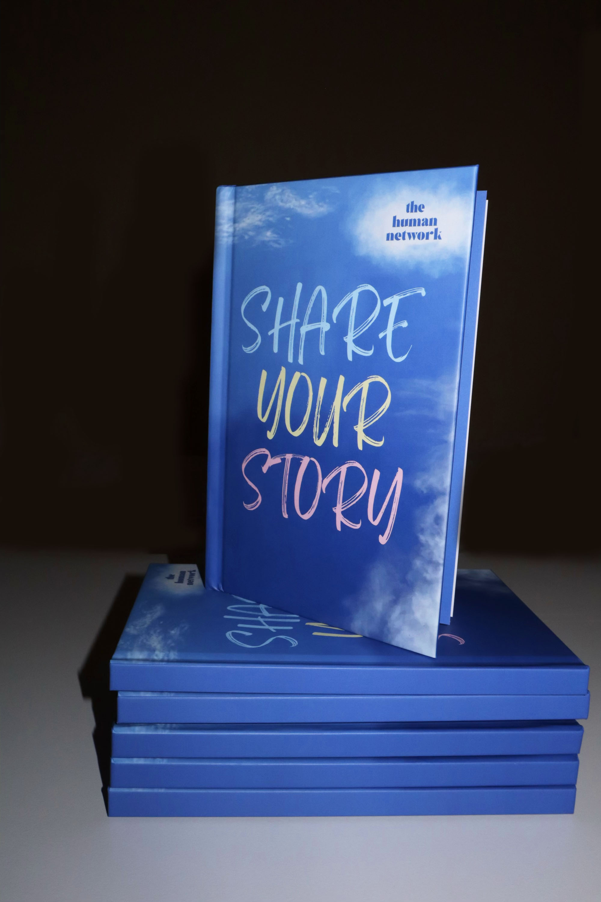

The Human Network is a 501(c)(3) nonprofit organization committed to fostering authentic connection, reducing isolation, and promoting emotional well-being.
We achieve this by distributing custom, anonymous journals to community spaces, providing safe and welcoming opportunities for people to read, write, and reflect.
One in five U.S. adults experiences mental illness each year, yet nearly half don't receive help, often due to stigma or limited access to care. As one Human Network entry reads, "I take meds and go to therapy, but the pain doesn't go away. You learn to live with grief."
Each journal offers a place for voices like this to be heard, connecting people through shared reflection and empathy, while building a community grounded in the belief that everyone has a story worth telling.

The first Human Network journal was crafted as a passion project by one of our founders during her undergraduate studies at the University of Michigan. Before she knew it, the pages were full of beautiful, vulnerable, and inspiring entries. After hand-making a few more journals and seeing such positive results, she produced hard-cover custom journals and began distributing them to a variety of communities — again, the pages quickly filled with incredible stories.

The most current "Share Your Story" journal was produced for all communities. We launched our first formal partnership with Citymeals on Wheels, crafting co-branded, bilingual journals — if you're interested in partnering with us, don't hesitate to reach out.

Our first connection event was held in Ann Arbor at a local coffee shop, bonding people who'd never met through group journaling and meaningful conversation. Achieving 501(c)(3) status has been an exciting step for The Human Network — it lets us expand our programs, distribute more journals at no cost, and bring our community-building work to even more people.
If you or someone you know needs help, here are some THN-approved resources that offer a variety of support services:
National Alliance on Mental Illness — website has amazing resources and support groups.
800-950-6264Confidential support for domestic violence survivors.
1-800-799-7233Mindfulness training app with guided meditations and podcasts.
App with guided meditations and mindfulness tools.